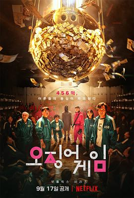

鱿鱼游戏 第一季 / 오징어 게임
又名：第六轮 / Squid Game / Round Six
和《密室逃生》很像，很多很多熟悉的面孔，但是结尾真的是无数个问号，什么事情比看望女儿重要？？？另外警察的故事线就这么不明不白结束了？？？
作品信息
| 导演 | 黄东赫 |
| 编剧 | 黄东赫 |
| 主演 | 李政宰 / 朴海秀 / 魏嘏隽 / 孔刘 / 李炳宪 / 吴永洙 / 郑好娟 / 许成泰 / 金周灵 / 李瑜美 / 阿努帕姆·特里帕蒂 / 金英玉 / 金范来 / 李书焕 / 金英善 / 朴惠珍 / 姜末琴 / 杰弗里·朱利亚诺 / 约翰 D.迈克斯 / 丹尼尔·C·肯尼迪 |
| 类型 | 悬疑 / 惊悚 |
| 制片国家/地区 | 韩国 |
| 语言 | 韩语 / 英语 / 乌尔都语 / 汉语普通话 |
| 首播 | 2021-09-17(韩国) |
| 季数 | 1 |
| 集数 | 9 |
| 单集片长 | 60分钟 |
| IMDb | tt10919420 |
说过什么
2021-10-01 21:06:29
广播 · 看过 · ★★★★☆
和《密室逃生》很像，很多很多熟悉的面孔，但是结尾真的是无数个问号，什么事情比看望女儿重要？？？另外警察的故事线就这么不明不白结束了？？？
2021-09-26 10:34:13
广播 · 想看
最后一次看到是 2026-08-01T11:05:14+10:00 · 豆瓣原页